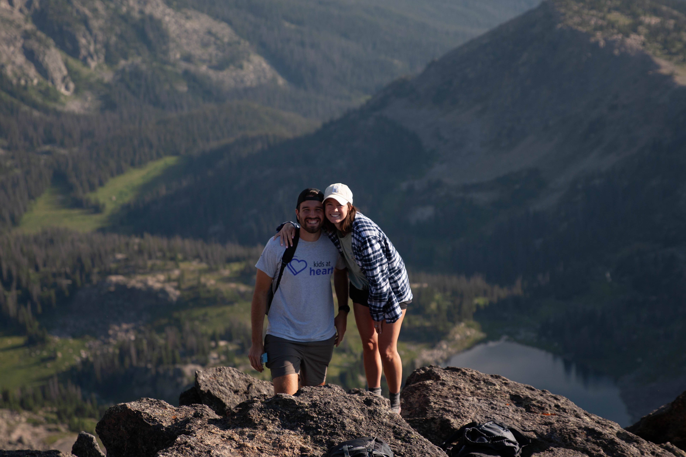
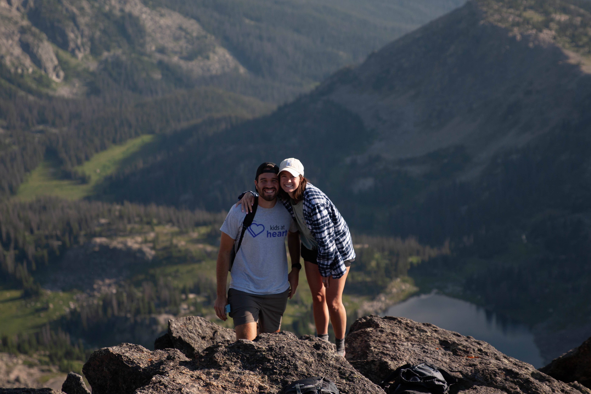

.jpg)
Photography
This was one of my favorite pages to make as I've become super passionate about photography in the last year, in addition every single photo on this website was taken by me. Now don't be concerned dear reader I love engineering and it is always my number one passion. But photography has become extremely fun. I currently shoot on a Cannon EOS 1D Mark 3, show top right. I use a 70-200, and a 16-35 mm lens, top left, to shoot all sorts of things. Every picture in this website was taken by me, some are good, some are bad, but they're all mine. In terms of experience, I've been shooting all over the country and the world. I also am a photographer for LouCity FC. I shoot at every LouCity game I can, and absolutely love it. I also shoot for TheDroneRanger from time to time, that work is explained in the Drone Work section. I wanted to learn something that I could build upon and somethign that was an actual skill. I had already done engineering stuff and I wanted something fresh and new. not that engineering isn't but I wanted something different from anything I've ever done before. My cousin had been pushing me to get into photography and after my first internship I decided to puchase gear. I spent around two grand, but I've never been happier with my decisions. I've also added a link to my portfolio page below if you'd like to see my experience in photography.

 
